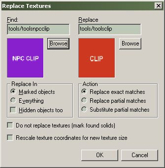

Dialogs: Replace Textures
This will bring up the Replace Textures dialog which allows you to search, mark or replace all textures of a certain type.

Find
This field contains the texture name to search for when replacing textures. Click the Browse button to pick a texture from the Texture Browser. How the texture name is used to replace textures are controlled by the Action options.
Replace
When replacing textures, they will be switched to the texture named in the Replace field. Click the Browse button to pick a texture from the Texture Browser. How the texture name is used to replace textures are controlled by the Action options.
Replace In
The Replace In section lets you specify what objects in the map should be affected by the replace operation. You can choose to the operation to affect Everything or only Marked objects. You can also choose to have hidden objects be affected by marking the Hidden objects too option.
Action
This lets you choose which search-and-replace method you would like to use.
Replace exact matches
This option is used for the most basic search and replace. It will replace any textures with a name that exactly matches the text specified in the Find field. The matching textures will then be switched to the texture named in the Replace field.
Replace partial matches
This option will replace or mark any textures with a name that contains a partial match the text specified in the Find field. For example, entering “grate” in the Find field will find the textures named “grate”, “grate02”, and “grate_large”, but not “grat1” or “green”. All matching textures will then be replaced by the texture named in the Replace field.
Substitute partial matches
With this option enabled, you can search for a specific part of a texture name, and substitute that part with something else. For example, if you have a group of textures with “slime” as part of their name ("slimedoor", "slimefloor", etc), and you want to change them to “rust” ("rustdoor", "rustfloor", etc), use this option. Enter “slime” in the Find field and “rust” in the Replace field, and the textures will be changed appropriately.
Do not replace textures (mark solids found)
Use this feature to simply mark (select) faces containing the same texture, instead of replacing them with another texture. This is extremely useful if you would like to modify the texture attributes of every texture of a certain type, but don't want to select each one manually (while you are in the Texture Application mode).
Rescale texture coordinates for new size
When replacing materials of different sizes, checking this option will cause Hammer to alter the texture scaling on the brushes so that the replacement material becomes the same size as the material it is replacing. For example, if you have a wall with a 256x256 material applied to it at .5 scaling, replacing it with a 512x512 material will cause the texture scaling to be changed to .25 on the brush.
To find and replace a specific texture in a map:
- Choose Replace Textures from the Tools Menu.
- In the Find section, click Browse.
- Find a texture you wish to have replaced in the Textures window and Double-click it.
- In the Replace section, click Browse.
- Find the texture that you wish the replaced textures to be switched to in the Textures window and Double-click it.
- Choose the options in the Replace In section that best match the objects you want to affect.
- In the Action section, make sure Replace exact matches selected.
- Click OK. A dialog box informs you of how many textures were replaced.
Related Topics
© 2004 Valve Corporation. All rights reserved. Valve, the Valve logo, Half-Life, the Half-Life logo, the Lambda logo, Steam, the Steam logo, Team Fortress, the Team Fortress logo, Opposing Force, Day of Defeat, the Day of Defeat logo, Counter-Strike, the Counter-Strike logo, Source, the Source logo, Hammer and Counter-Strike: Condition Zero are trademarks and/or registered trademarks of Valve Corporation. Microsoft and Visual Studio are trademarks and/or registered trademarks of Microsoft Corporation. All other trademarks are property of their respective owners.